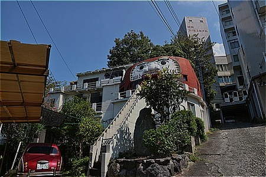

達磨寺/愛媛県
達磨寺/愛媛県
愛媛県の県都、松山市の奥座敷、道後温泉である。
明治時代に建てられた三層楼の道後温泉本館を中心に数多くの温泉旅館が並ぶその様は日本を代表する温泉街といえよう。
その一方で観光客の闊歩する場所のすぐ近くにソープ街があったり、風俗店の看板で埋め尽くされた風俗界の九龍城のような建物があったり、今や絶滅危惧種と化したストリップ小屋などもあったりしてダークサイドも充実の温泉街、なのである。
また、近くには当サイトの読者の皆様にはお馴染みの四国屈指の珍寺、石手寺などもあり、のんびり温泉に浸かるだけでは許されない、緊張感がそこはかとなく漂うお宝スポット満載のファンキーな温泉街だったりもする。スプーン曲げ体験やオーラ撮影が出来るユースホステルとかもあるしねー。
そんな道後温泉の一画に不思議な建物がある、とワンダーＪＡＰＡＮで見たのは随分前になる。
ワンダーJAPAN9 (三才ムック VOL. 214)
場所は温泉街の東側。大きな温泉ホテルの隣にちょこんと建っている赤いモノ。
寄ってみましょう。
巨大達磨さんである。
むむむ。
平屋の建物の上に達磨型の建物が載っている、という表現でよろしいんでしょうか？
ダルマの口が扉になっていて狭い階段を上って中に入るようだが、階段には柵があって上れないようになっている。
階段脇には石碑があり「別格本山 梅渓山 達磨寺」とある。
口の両脇のガクブル感が堪らない。
・ ・
)))) 皿 ((((
こんな感じですか？
でもチョット遠目に見るとビックリしてあんぐり口を開けているようにも見えなくもない。
ダルマとはいえ微妙なカクカク感があって、逆にそこが愛らしい。
なぜダルマなのか、なぜ寺なのか疑問は残るが、それを勝手な想像で補う、というのも意味不明な物件に出くわした時の楽しみなので、敢えて放置！
何となく柿博物館を連想させる色と形。
ストリップから珍寺まで、聖も俗も呑み込む懐深い街だけに、この達磨さんも意外と目立たず温泉街の点景として馴染んでいた。

階段下の赤い車と妙にマッチしてますね。
おまけ
温泉街の中で大仏さんを発見した。
先述の道後温泉本館から坂を登って数十メートル、円満寺というお寺の中にある「湯の大地蔵」というお地蔵さんである。
白塗りの大きなお地蔵さんで高さは3ｍ、といったところだろうか。
まさかこんなところに大仏さんがおわすとは予想してなかっただけにショックもひとしお。
白塗りの御顔が何ともチャーミングだ。
地元では火除け地蔵とも呼ばれているとか。
作者は行基と伝えられている。ホントかな〜。
にしても色々ありますなー、道後。さすが日本最古の温泉だね。
2012.08.
珍寺大道場 HOME